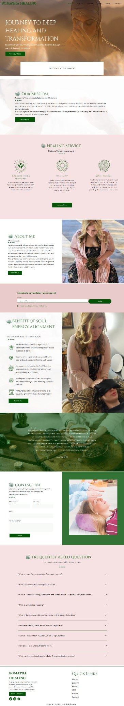

← Back to Work
Wellness
Somatra Healing
The challenge
Keep the wellness atmosphere while making the service and next step clear.
Key decisions
- Use a calm visual rhythm.
- Explain the service clearly.
- Keep action visible.
The improved journey
Visitors can understand the offer without losing the softer brand experience.